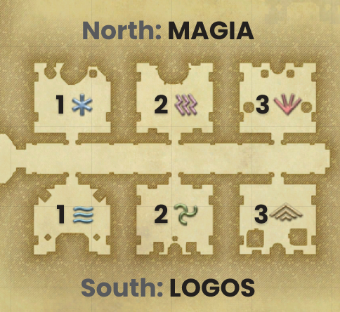

Rooms
- Mark the first room on the right (Water).
/p defensive is water, offensive is lightning, mobs do a cone attack (easier to dodge when close)- Check if tank is DRK (and alert healer).
- Tell people to wait for tank to explode trap.
- Ready check.
- Clear support room.

Explanations
Trash
- Check casualities.
- Wait at the top of the stairs.
- There is a trap.
- Stay back and let tank pull.
Hallway
- No big AOE's in this hallway
- If you are a white mage, don't use assize
- If you are a dancer, don't use your dances
- If you are an astrologian, don't use earthly star or lord of crowns
- ...
/shout portal found
Trash
- There is a trap.
- Tank will bring towards us.
Support rooms
- Last 2 ghosts
- Party leaders can mark the room that you will going to
- There is a trap in each room
- Wait for the trappers to find the trap
- ...
- Tanks can invuln and take the traps, so make sure to keep your distance if you are not a tank
- If you are a dark knight, make sure your healers are prepared to heal you
- All 6 tanks can turn their tank stances on
- If you are using martialist, be sure to set your magicite to defensive
- You can do this by doing magia auto one more time, you should then see a small shield icon on your magia wheel.
- If you are not a tank, you don't need to change anything, just stay in magia auto offensive
- If your group looks ready, you can do some ready checks
- Once all groups are ready, I will check with support
- ...
- Everyone is ready, tanks can stand in their portals
- Give the tank a moment to establish aggro
Hallway
- Tanks turn your stances off again, and you can go back to magia auto offensive.
- No Big AOE's.
- WStay back and let tank pull.
- Use last 2 mobs to build gauges.